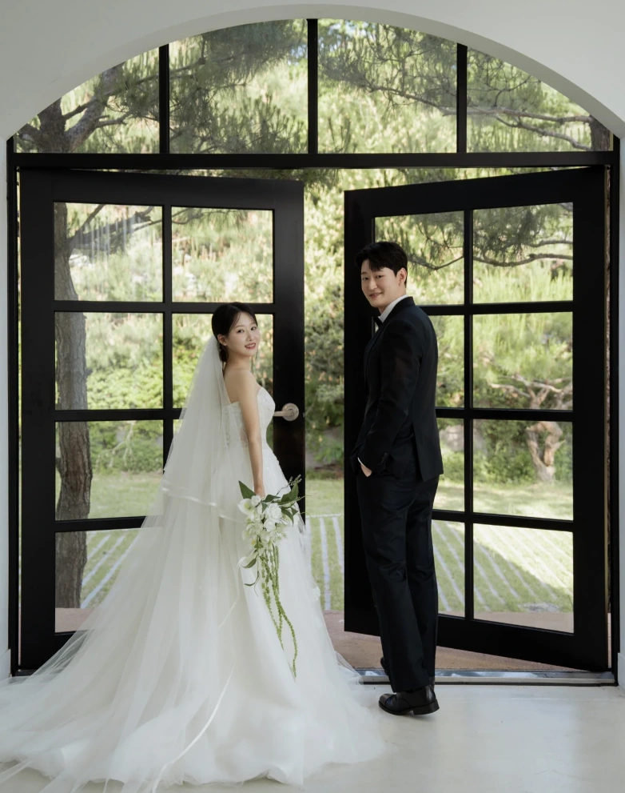
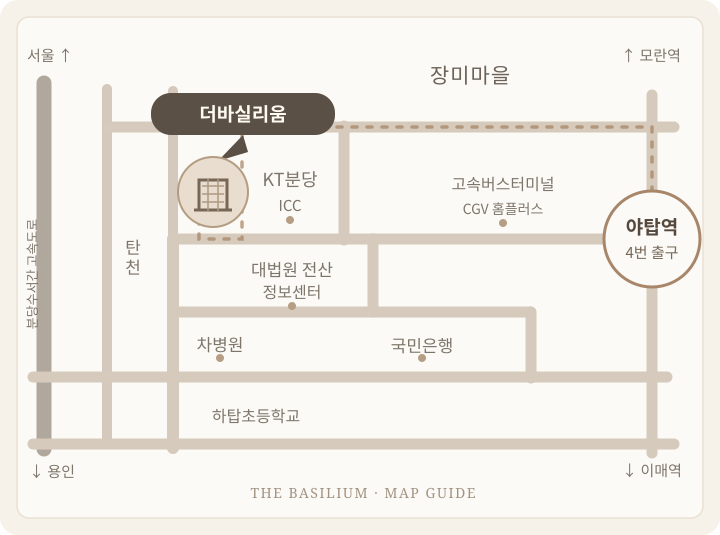
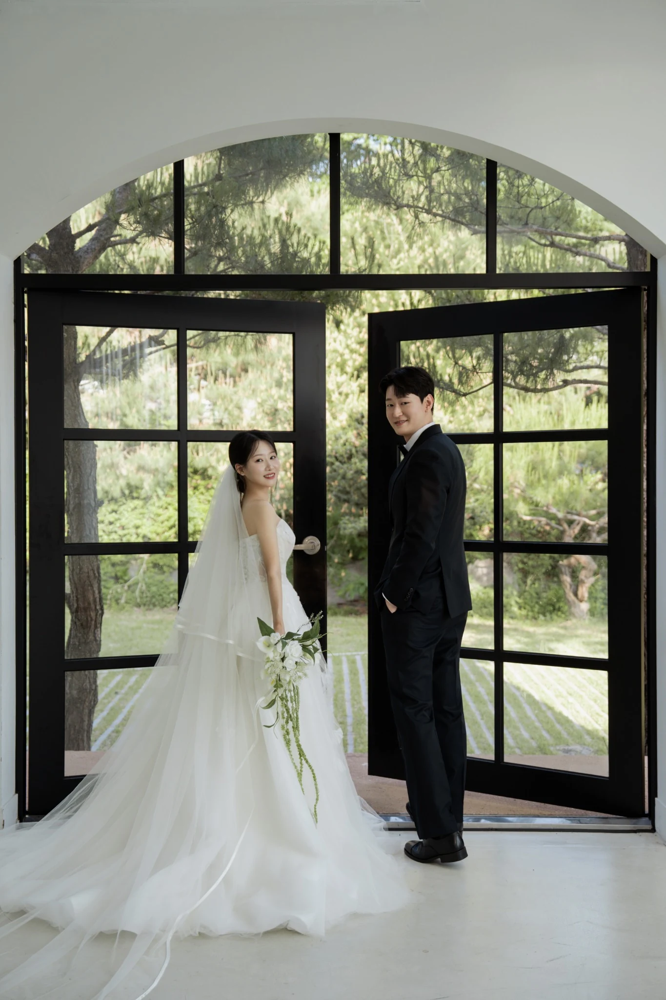
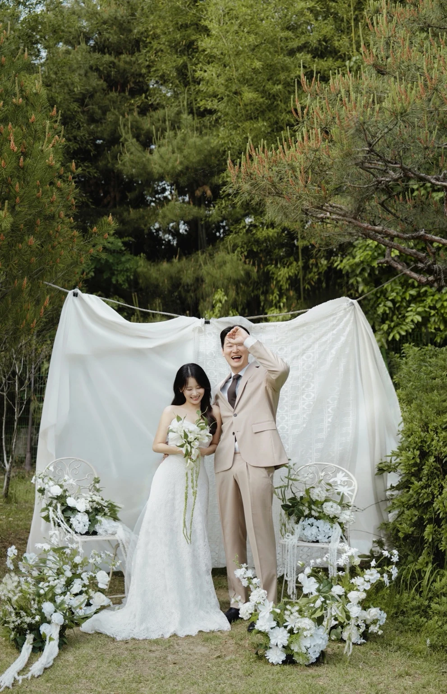
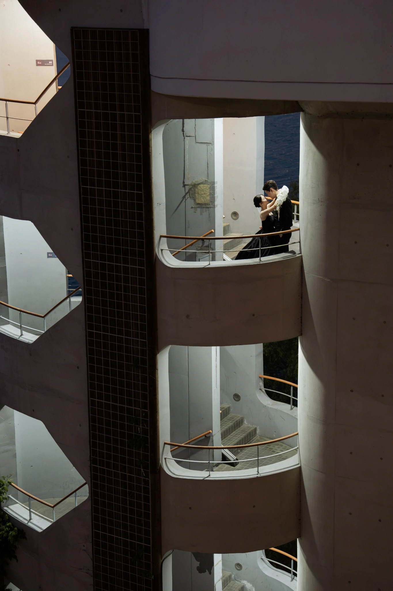
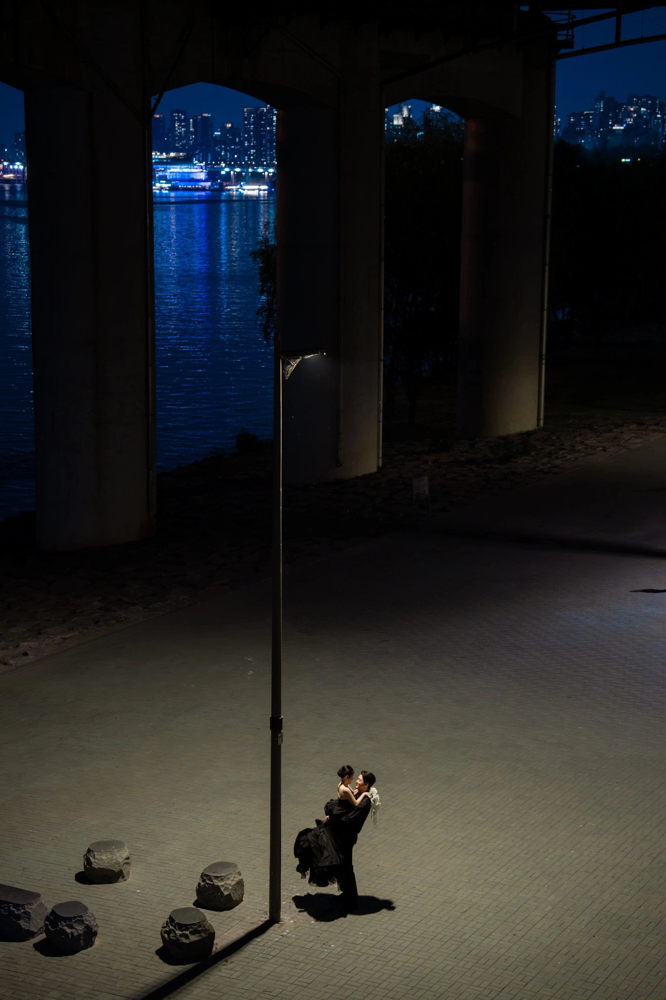

BYEONGWOON
JUHYUN
JUHYUN
We're getting married
2027. 01. 02 · SAT · 5:20 PM
01 / INVITATION

서로의 하루에 가장 가까운 사람이 되어
같은 곳을 바라보며 걸어가려 합니다.
소중한 날, 함께해 주시면 감사하겠습니다.
병운 · 주현
황영대 · 임혜영의 장남 병운
염윤종 · 안광숙의 장녀 주현
02 / THE WEDDING DAY
02JAN 2027
소중한 분들과 함께하고 싶은 날,
2027년 1월 2일 토요일 오후 5시 20분
2027. 01
SMTWTFS
12
3456789
10111213141516
17181920212223
2425262728293031
예식일까지 남은 시간을 계산 중입니다.
03 / WEDDING LOCATION

THE BASILIUMJAN 02, 2027
더바실리움
경기도 성남시 분당구 양현로 322 (야탑동 344-1) 8층

약도 크게 보기 및 길찾기 ↗
셔틀 이용 시
야탑역 4번 출구 택시 승강장 앞에서 셔틀버스를 이용하실 수 있습니다.
약 15분 간격으로 운행됩니다.
주차장 이용 시
본 건물 주차장을 이용해 주세요.
약 600대 주차 가능, 하객 차량은 2시간 무료입니다.
04 / PHOTOS
THE PHOTO EDIT








05 / WITH GRATITUDE
축하의 마음을 전해주시는 분들께
소중한 마음만으로도
저희에게는 큰 힘이 됩니다.
전해주시는 따뜻한 마음에 감사드립니다.
BYEONGWOON
JUHYUN
소중한 마음으로
함께해 주셔서
진심으로 감사드립니다.